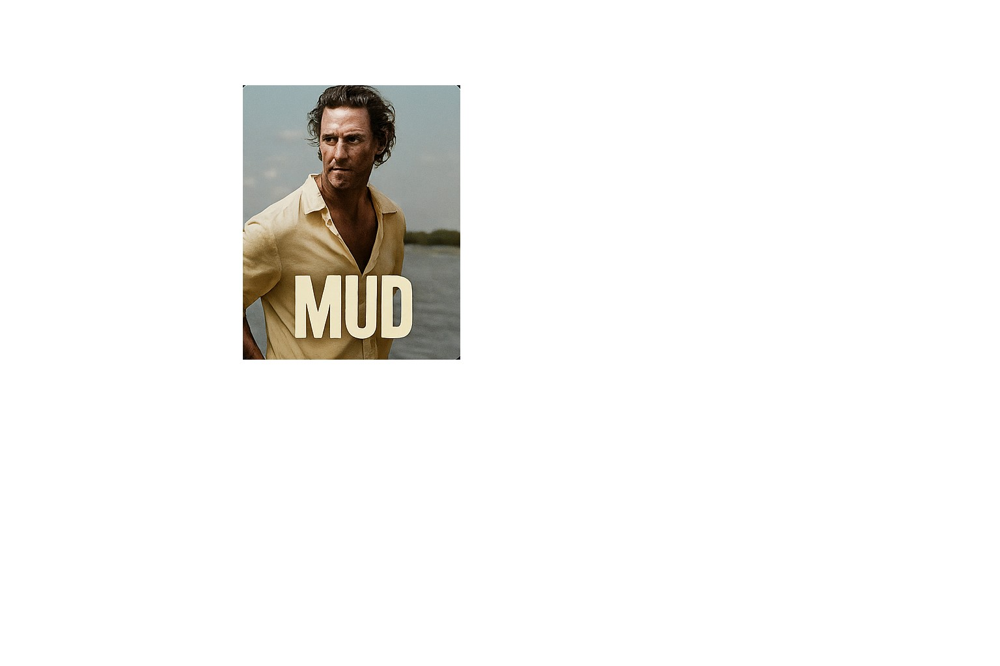
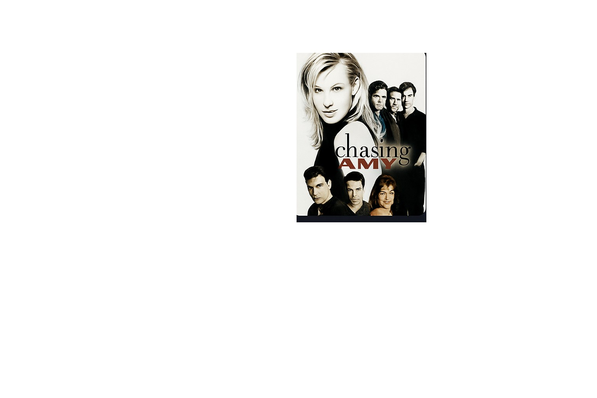
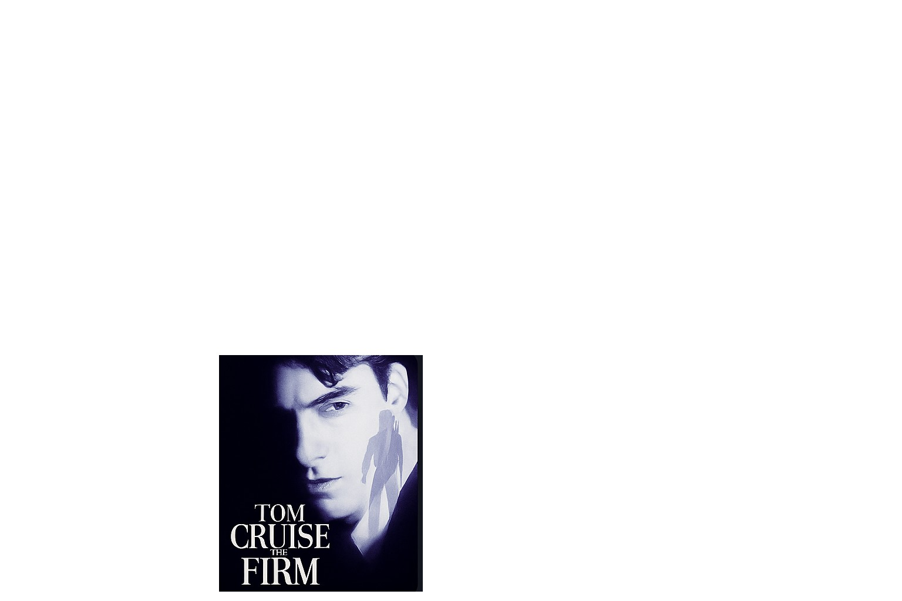

Drama
Sling Blade (1996)
Written, directed, and headlined by Billy Bob Thornton, this film follows Karl Childers after his release from a psychiatric hospital as he tries to adjust to small-town life.
Capstone 2 · Web Project
My name is Shequila Sledge, and this site is my Capstone 2 project. I built it to trace how films and performers connect back to Arkansas through filming locations, hometowns, and career ties. At the same time, it let me show what I can do with planning, layout, and front-end design for the web.
These titles all touch Arkansas in some way. Some were filmed here, some star Arkansas natives, and some lean on Arkansas history and landscapes to tell their stories.
Drama
Written, directed, and headlined by Billy Bob Thornton, this film follows Karl Childers after his release from a psychiatric hospital as he tries to adjust to small-town life.
Drama
Two boys growing up along the Mississippi River discover a fugitive named Mud hiding on a river island. Helping him pulls them into his complicated past.
Romantic Comedy / Drama
A story about relationships, friendship, and identity in the comic-book world. Joey Lauren Adams plays a lead role that helped define her career.
Drama / Comedy
Loosely based on a real-life encounter with billionaire Howard Hughes, this film follows a working-class man whose life changes after an unexpected meeting.
Science Fiction TV
A classic science-fiction series that follows Buck Rogers after he wakes up 500 years in the future and has to adjust to a completely new world.
Legal Thriller
A legal thriller based on John Grisham’s novel, following a young lawyer who slowly discovers that his new law firm is hiding dangerous secrets.
Biographical Drama

A biopic about musician Johnny Cash, focusing on his early years, his rise to fame, and his relationship with June Carter.
Western
A modern take on the classic western about a young girl seeking justice for her father’s death with the help of a U.S. Marshal.
Instead of just listing names, I treated this section like a connection map. Each person links back to a project and a place, so you can see how much Arkansas quietly shows up across different movies and shows.
I built this project over the course of a semester for my Capstone 2 class. I started with a simple idea—highlight Arkansas films and actors—then broke it down into pages, sections, and data that I could realistically finish.
Once I had the structure, I focused on the experience: making the site feel like a small movie night on a single page. That meant gradients, motion, and “film strip” cards that still keep the content readable and to the point.
I plan to host this on GitHub as part of my portfolio so I can show that I can research, organize information, and design and code a complete front-end project on my own from idea to final polish.